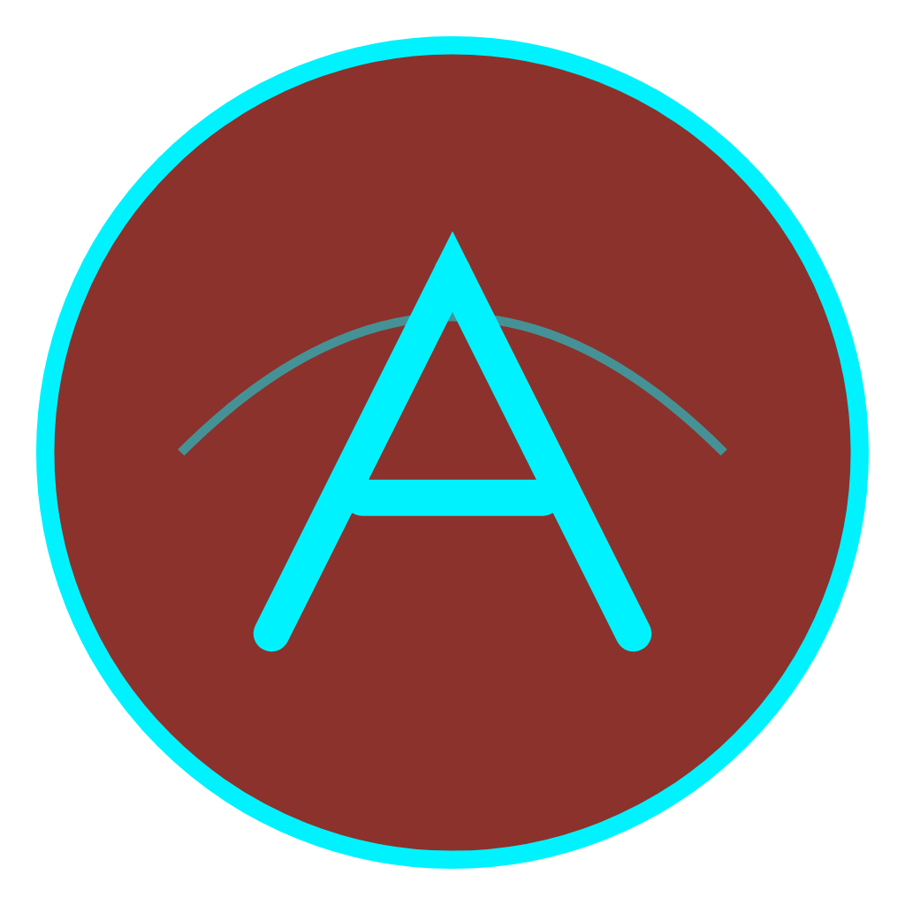
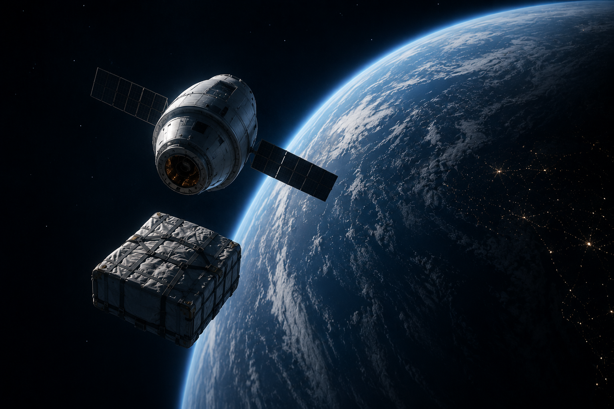
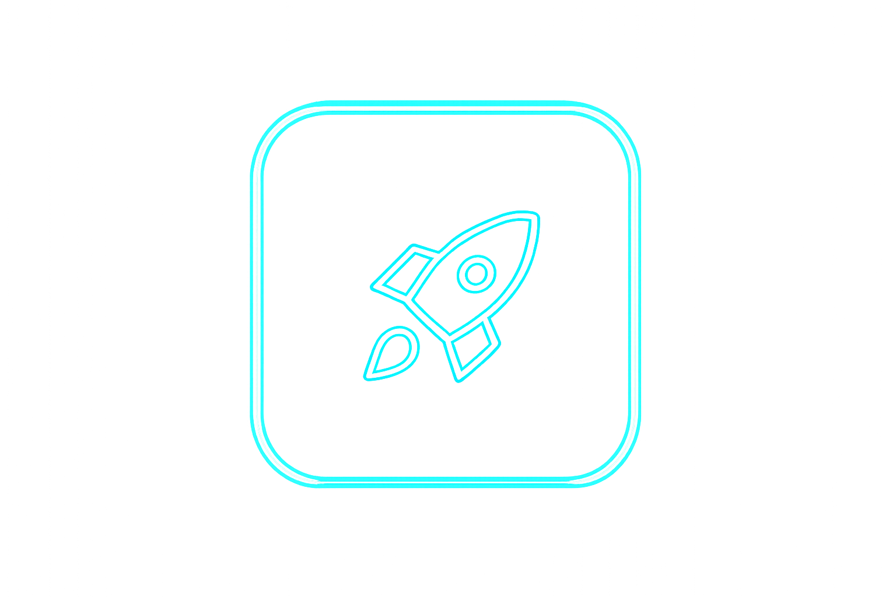
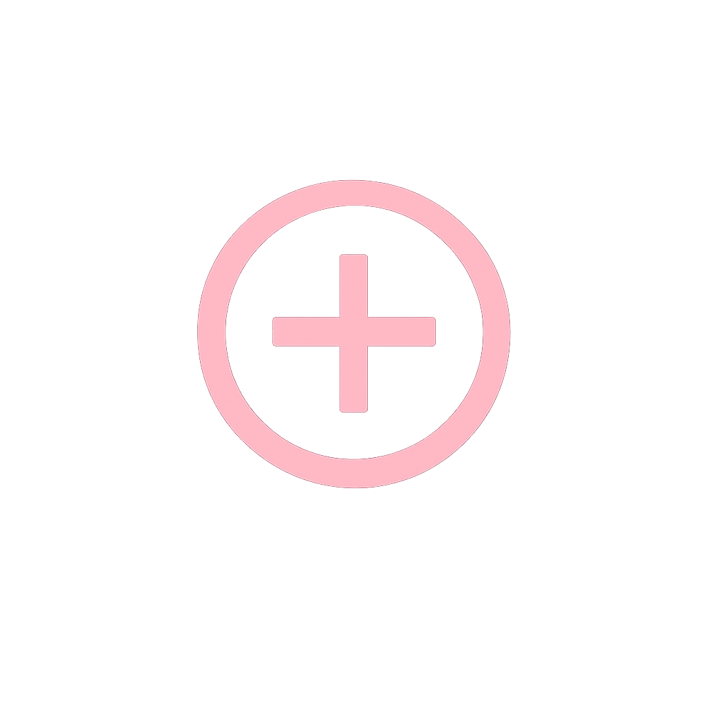

Transforme o Planeta Vermelho em uma base autônoma e sustentável
com a tecnologia ISRU da próxima geração!
Manter vida em Marte exige suprimentos da Terra, mas os custos de transporte tornam essa dependência insustentável.
Oxigênio, água, combustível e alimentos são
recursos finitos que dependem de remessas
periódicas de alto risco.
Bilhões de dólares são gastos apenas para
garantir o suporte básico, limitando o avanço
científico real.

O ARES-AI propõe um sistema capaz de transformar elementos presentes em Marte em recursos úteis para sobrevivência humana.
Produção de metano (combustível) e água reutilizável a partir de CO₂ e H₂ pela reação de Sabatier, garantindo combustível marciano.
A água e o oxigênio produzidos permitem estufas agrícolas controladas, com monitoramento por IA e controle térmico eficiente.
O cérebro do projeto que controlará toda a infraestrutura do ARES-AI. Ela garante autonomia operacional.

Reduzir a dependência da Terra em missões espaciais por meio da produção autônoma de água, oxigênio e combustível em Marte.
A inteligência artificial controla a quantidade de energia existente na máquina, faz a manutenção dos robôs e gerencia a agricultura.
Integrar tecnologias espaciais reais em um sistema inteligente descentralizado, garantindo controle local da missão e resiliência a falhas de comunicação.
Cultivos espaciais fornecem alimentos aos astronautas e inspiram métodos agrícolas mais eficientes, reduzindo custos e ampliando o acesso aos alimentos.
Suporte logístico para exploração estatal.
Garantia de sobrevivência e segurança em campo.
Novas fronteiras econômicas e infraestrutura.
Suporte para novos avanços tecnológicos e previsão de futuro.

Purificação e reciclagem de água em desertos.Projeto acadêmico inspirado em tecnologias reais da indústria espacial e em pesquisas relacionadas à exploração sustentável de Marte.
"O futuro da exploração espacial depende da capacidade de transformar recursos locais em autonomia".
Ana Beatriz de Oliveira Kurihara (RM:571079).
Ana Luíza Montezano (RM:571979).